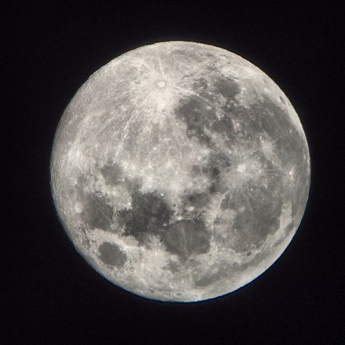
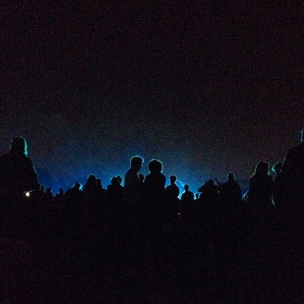
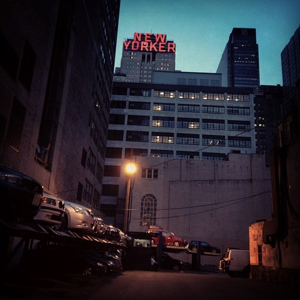
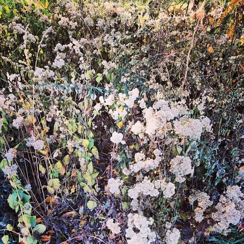
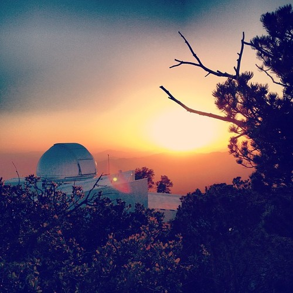
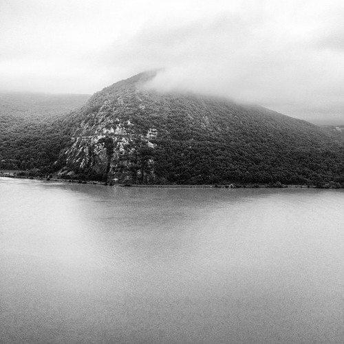
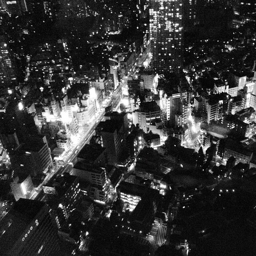
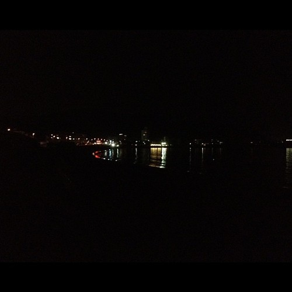
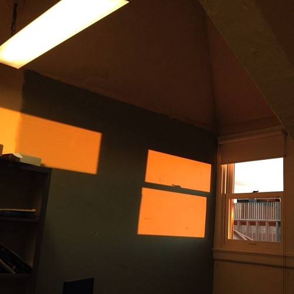
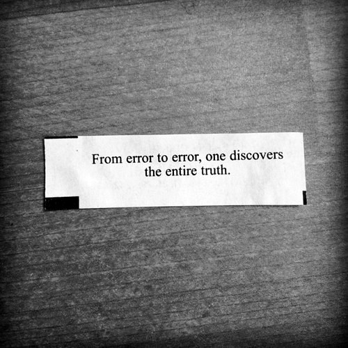

Welcome to my research website! I am a PhD student at the Columbia University Astronomy Department. My current work focuses on weak lensing non-Gaussian statistics, using N-body ray tracing simulations as a tool to study the large scale structure of our universe. The ultimate goal of this work is to understand the nature of dark energy and other cosmological parameters. I also spend a small amount of my time observing AGNs at optical telescopes, hoping to find supermassive black hole binaries!
Jia Liu
Jia Liu
ASTRONOMY DEPARTMENT | COLUMBIA UNIVERSITY
Research
2011 - present: Graduate student, Columbia University, New York
2012 - present: Weak gravitational lensing
(with Zoltan Haiman, Andrea Petri, Colin Hill, Lam Hui)
2011 - 2012: Modeling x-ray bursts from neutron stars in 3D using the IGCM code
(with Kristen Menou)
2012 summer: JSPS/NSF summer fellow, Japan Aerospace Exploration Agency, Japan
Testing the capability of Astro-H, Japan's next x-ray space mission, to observe x-ray bursts
(with: Ken Ebisawa, Masahiro Tsujimoto)
2009 - 2011: Post-baccalaureate, Columbia University, New York
Search for super massive black hole binaries with broad Balmer lines
(with Jules Halpern, Mike Eracleous)
Teaching
2014 Spring: TA C3602 Physical Cosmology (DETF slides)
2013 Fall: TA C1610 Theories of the Universe: From Babylon to the Big Bang
2013 Spring & Fall: TA Observing labs
2012 Fall: TA C1903 Astronomy Lab I - Earth, Moon, and Planets
2012 Spring: TA BC1753 Life in the Universe
2011 Fall: TA BC2001 Barnard Physics Lab
2011 Sprint: TA BC2002 Barnard Physics Lab
2010 Fall: TA BC2001 Barnard Physics Lab
Publications
[ Refereed and Submitted Papers ]
8. A Large Systematic Search for Close Supermassive Binary and Rapidly Recoiling Black Holes - II. Continued Spectroscopic Monitoring and Optical Flux Variability
J. Runnoe, et al.
Accepted for publication in the Astrophysical Journal Supplements (2015)
7. A Stringent Test for Supermassive Black Hole Binaries as an Explanation for Broad, Double-Peaked Emission Lines in Active Galactic Nuclei
Jia Liu, Mike Eracleous, & Jules Halpern
Submitted to ApJ (2015)
6. Cross-correlation of Planck CMB Lensing and CFHTLenS Galaxy Weak Lensing Maps
Jia Liu & J. Colin Hill
Phys. Rev. D 92, 063517 (2015)
5. Emulating the CFHTLenS Weak Lensing data: Cosmological Constraints from moments and Minkowski functionals
Andrea Petri, Jia Liu, Zoltán Haiman, Morgan May, Lam Hui, & Jan M. Kratochvil
Phys. Rev. D 91, 103511 (2015)
4. Cosmology Constraints from the Weak Lensing Peak Counts and the Power Spectrum in CFHTLenS
Jia Liu, Andrea Petri, Zoltán Haiman, Lam Hui, Jan M. Kratochvil, & Morgan May
Phys. Rev. D 91, 063507 (2015)
3. Impact of Magnification and Size Bias on Weak Lensing Power Spectrum and Peak Statistics
Jia Liu, Zoltán Haiman, Lam Hui, Jan M. Kratochvil, & Morgan May
Phys. Rev. D 89, 023515 (2014)
2. Discovery of a new TeV gamma-ray source: VER J0521+211
Archambault et al.
The Astrophysical Journal, Volume 776, Issue 2, article id. 69, 10 pp. (2013)
1. A Large Systematic Search for Close Supermassive Binary and Rapidly Recoiling Black Holes
Michael Eracleous, Todd A. Boroson, Jules P. Halpern, & Jia Liu
The Astrophysical Journal Supplement, Volume 201, Issue 2, article id. 23, 21 pp. (2012)
[ Conference Proceedings ]
2. The Impact of Magnification and Size Bias on Weak Lensing Power Spectrum and Peak Statistics
Jia Liu
Rencontres de Moriond Cosmology, La Thuile, Italy (2014)
1. Status and Prospects of The X-ray Astronomy Satellite Astro-H
Masahiro Tsujimoto & Jia Liu
The 13th Marcel Grossmann Meeting, Stockholm, Sweden (2013)
Talks & Posters
[ Talks ]
2015/07 Contributed: Theoretical and Observational Progress on the Large-scale Structure of the Universe, Garching, Germany
2015/05 Invited: Joint Stony Brook / Brookhaven National Lab, Stony Brook, NY
2014/11 Invited: Jiaotong University, Shanghai, China
2014/10 Invited: National Astronomical Observatories of China, Beijing, China
2014/03 Contributed: Rencontres de Moriond Cosmology 2014, La Thuile, Italy
2014/02 Public outreach: "Neutral Particle Power", Columbia Astronomy Public Outreach, New York, NY
2014/01 Contributed: Essential Cosmology for the Next Generation, Cabo San Lucas, Mexico
2014/01 Public outreach: "Search For Life", St. Marcellinius Secondary School, Mississauga, Ontario, Canada
2012/04 Public outreach: "Exploring the neutron star", Gesamtkunstwerk 1020, New York, NY
[ Posters ]
2015/04 "Weak Lensing Non-Gaussian Statistics using N-body Simulations", Columbia university Data Science Institute Bi-Annual Symposium, New York, NY
2013/06 "Magnification Bias", CMB2013, Onna, Japan
2012/08 "X-ray Bursts with Astro-H SXS", Astro-H Summer Workshop, Kyoto, Japan
2012/06 "Exploring the Neutron Star", EAPSI Orientation, Hayama, Japan
Observing Runs
MDM Observatory
2013/05/01 - 05/05 MDM 2.4m ModSpec + Templeton 1k (PI)
2011/06/26 - 07/04 MDM 2.4m CCDS
2010/12/28 - 2011/01/02 MDM 2.4m OSMOS
2010/06/07 - 06/08 MDM 2.4m CCDS (PI)
2010/03/12 - 03/16 MDM 2.4m CCDS
2009/12/14 - 12/20 MDM 2.4m CCDS & 1.3m Templeton
2009/08/19 - 08/25 MDM 2.4m CCDS & 1.3m Templeton
2009/05/25 - 05/28 MDM 2.4m CCDS with Retrocam
2009/03/17 - 03/18 MDM 2.4m CCDS (Part of an observing class)
Contact
email: jia at astro.columbia.edu
Weak Lensing
Weak Gravitational Lensing
Background
One of the most pressing problems in modern physics is the nature of dark energy, responsible for the accelerated expansion of the universe. Weak gravitational lensing is a promising method to study dark energy. During their cosmic journey toward us, photons emitted at cosmological distances are deflected by the intervening matter. As a result, we see a distorted image of the source light distribution. Lensing distortions produce non-Gaussianity in maps of cosmic microwave background (CMB) temperature and polarization anisotropies. Lensed galaxies are magnified in brightness and weakly distorted from their intrinsic shape. By statistically measuring the lensing signal, the matter density fluctuations in the universe can be mapped, yielding constraints on the parameters of the background cosmological model.


Figure: simulated CMB lensing (left) and galaxy lensing (right).
Peak Counts
Matter fluctuation evolves non-linearly at small scales. Peaks in the convergence maps can capture non-Gaussian information beyond the two-point function. Yang et al. 2011 found that high significance peaks are typically caused by one single massive halo along the line of sight, while medium/low significance peaks are associated with 4-8 small halos. We run N-body ray tracing simulations, tailored to the 154 deg2 CFHTLenS survey. We find that when the power spectrum and peak counts are combined, the area of the error "banana" in the (Ωm, σ8) plane reduces by a factor of ~two, compared to using the power spectrum alone (Liu et al. 2015).
Cross correlating galaxy lensing and CMB lensing maps
Such cross-correlation probes the matter density in an intermediate redshift z=0.9, providing a tomographic outlook on the matter density evolution. Furthermore, the galaxy lensing survey and CMB survey systematics are generally uncorrelated, serving as a calibration tool for auto-correlations. In Liu & Hill 2015, we cross-correlate the CFHTLenS galaxy lensing convergence maps with Planck CMB lensing maps. Our results show two sigma tension with the constraints obtained from the Planck temperature measurements (similar but smaller tension has also been found by Hand et al. 2015 using CS82 and ACT data). In the paper, we also investigate possible sources of the tension, including intrinsic alignments, Photo-z uncertainties, masking of tSZ in the CMB maps, and the multiplicative bias.
Magnification and Size Bias
In Liu et al. 2014, we investigate systematics caused by magnitude and/or size cuts on galaxy samples. We find that ignoring such effects in modeling can cause the constraints on (Ωm, σ8, w) to be biased by many sigmas for the LSST survey. Fortunately, we also found that combination of the power spectrum and peak counts can help mitigate the impact, as they are biased differently in each parameters.
Web References
Surveys: CFHTLenS,
KiDS,
HSC,
Euclid,
LSST, Planck,
SDSS/BOSS
Ned Wright's cosmology calculator
Wayne Hu's CMB tutorials
Black Holes
Supermassive Black Hole Binaries
The Final Parsec Problem
Supermassive black hole binaries are thought to be a common, if not inevitable, outcome of the merger-driven evolution of galaxies. In the scenario described by Begelman et al. 1980, after two galaxies merge, their central black holes sink into the merger core through dynamical friction on a time scale of ∼108 years. The loosely bound binaries (∼kpc scale) later tighten to ∼1 pc scale through the scattering of nuclear stars, until the "inventory" is depleted. Thereafter, gravitational wave driven angular momentum loss will not be significant until the separation is 0.01-0.001 pc. The difficulty in shrinking the orbit after it reaches ∼1 pc is the so-called "final parsec problem". However, there is no direct evidence for existence of such close supermassive black hole binaries.
Double Peaked Emission Lines in Active Galactic Nuclei (AGNs)
In Liu, Eracleous, & Halpern 2015, we test for periodic motion in the broad emission lines of 13 long-term monitored AGNs. We do not find significant periodic signals. Therefore, we conclude that for these AGNs, any periods are significantly longer than our monitoring span, and/or mechanisms other than orbiting black holes are responsible for their double-peaked broad H-alpha lines and their line profile changes.


Figure: illustration of the binary black holes and the circumbinary disk around them (Bogdanovic et al. 2010, left) and the spectrum of the quasar SDSS J1536+0441 (Chornock et al. 2010, right).
Personal
Personal
Photos taken with my phone.
- 
- 
- 
- 
- 
- 
- 
- 
- 
- 